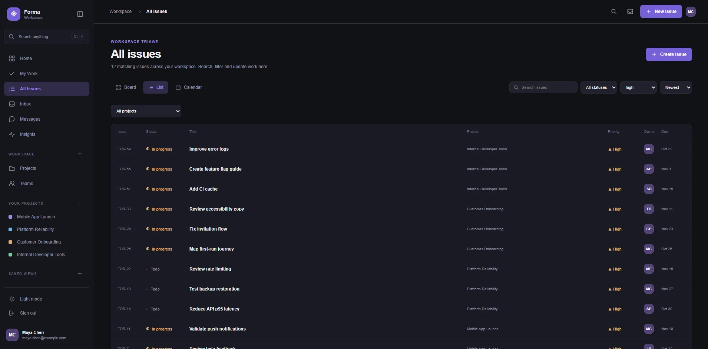
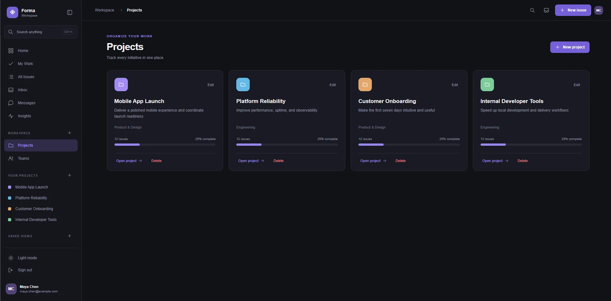
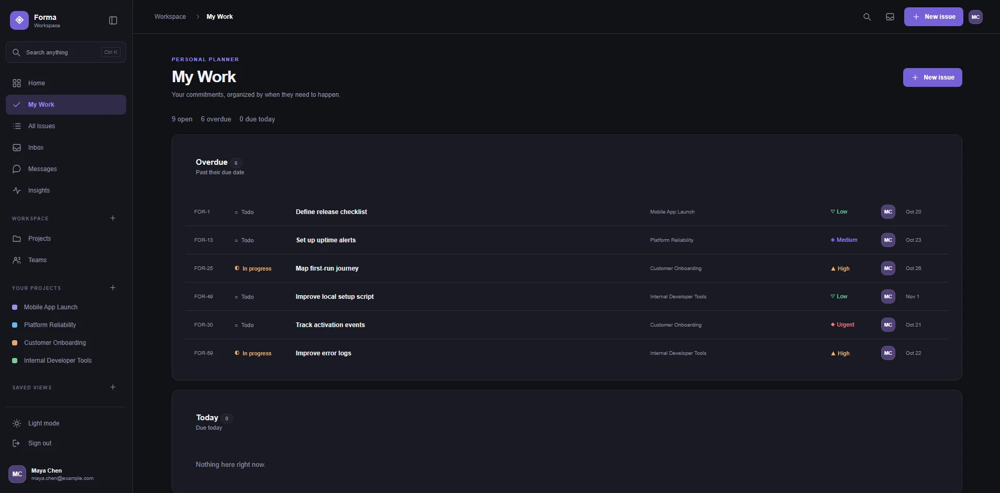
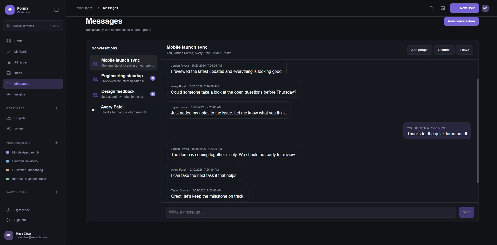
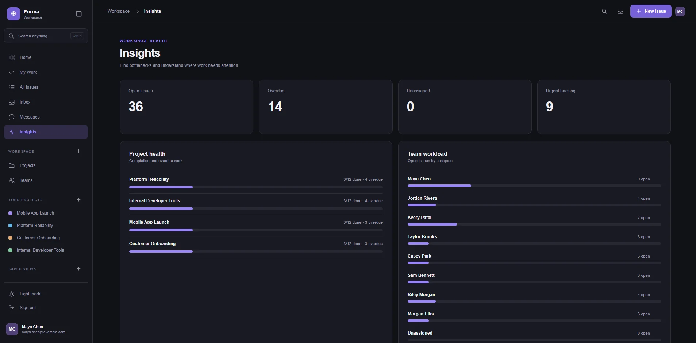
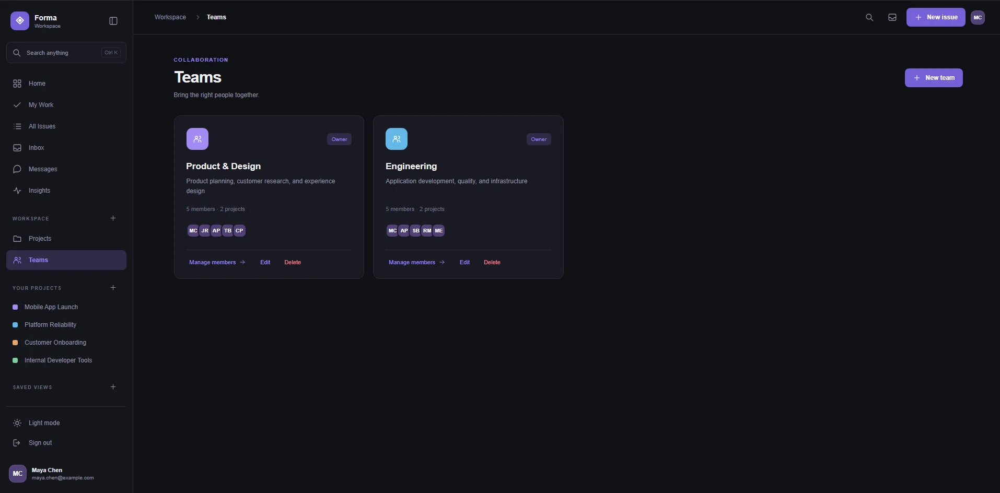

Forma.
A unified workspace for managing projects, tracking issues, coordinating teams, and keeping conversations connected to the work.

Give every task a place, and every team a shared view.
Forma began as a way to practice building a complete application, from authentication and database models to an interface people can use to plan real work. Instead of treating tasks as isolated records, I organized the product around projects, teammates, deadlines, and the conversations that support them.
From daily priorities to the bigger picture.
Plan and execute. A personalized home dashboard and My Work view surface assigned issues, upcoming deadlines, and completed work. Issue lists help users review priorities and track progress across projects.
Collaborate and understand. Teams and project spaces organize shared work, direct and group messages support communication, and insights summarize project health and workload.






One application, connected end to end.
Frontend
React and Vite power the interface, including dashboards, project views, task lists, and messaging. The layout uses a consistent design language across the workspace.
Backend and data
FastAPI exposes application endpoints. SQLAlchemy models users, teams, projects, tasks, and conversations. JWT-based authentication connects user sessions to protected workflows.
From local application to public demo.
The project currently runs locally, with a populated fictional workspace for testing and showcasing multi-user flows. Next steps include deploying the application, adding automated tests, and improving the public demo experience.
Explore Forma on GitHub ↗